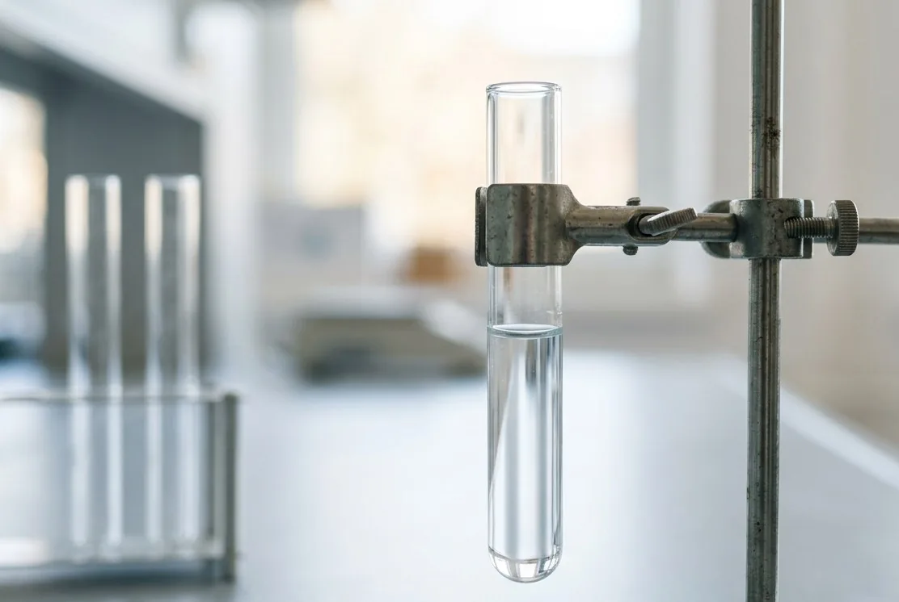

Обратный осмос
Рассматривается для питьевого потока или больших систем после расчёта.
Где метод не сработает
Требует давления, предочистки, дренажа и контроля качества пермеата.
По вкусу, цвету и запаху нельзя понять концентрацию нитратов. Сначала нужен корректный лабораторный результат и проверка возможного пути загрязнения источника.

| Наблюдение | Возможные причины | Проверка |
|---|---|---|
| Вода прозрачная и без запаха | Нитраты всё равно могут присутствовать | Лабораторный анализ |
| Колодец рядом с поверхностными источниками | Повышенный риск поступления с поверхности | Нитраты, нитриты, микробиология, осмотр |
| Показатель изменился по сезону | Изменение питания источника | Повторный отбор в сопоставимых условиях |
Для принятия решения нужен количественный результат, корректная точка отбора и понимание, для какого объёма требуется очищенная вода.
Метод определяется тем, сколько воды предстоит чистить – только кухонный кран или всё, что идёт по дому.
Рассматривается для питьевого потока или больших систем после расчёта.
Требует давления, предочистки, дренажа и контроля качества пермеата.
Может применяться в специализированных схемах под состав воды.
Нужны анализ и контроль конкурирующих ионов, регенерации и отходов.
Если возможно поверхностное поступление, параллельно проверяют конструкцию и окружение.
Фильтр не устраняет постоянный путь загрязнения в источник.
Если по анализу закрывают только питьевую точку, места нужно немного, но под мойкой должен поместиться не только модуль, а ещё накопительный бак и подход к сменным элементам. Вариант на весь дом – это уже колонна с селективной загрузкой и солевым баком, то есть отдельное техническое помещение с площадью, высотой и подходом со всех сторон. Поэтому первый вопрос про габариты – не про сантиметры, а про назначение: сколько воды и для чего требуется очищать.
У мембранной ступени сброс не залповый, а постоянный: пока набирается бак, часть воды уходит в канализацию вместе с задержанными солями. Врезку под этот слив делают выше сифона и с разрывом струи, иначе в модуль может потянуть запах из канализации. Если схему делают на весь дом на селективной смоле, картина другая – там регенерация солевым раствором, сток получается солёным, и в септик с биологией его не заводят.
Поверхностные и сезонные риски.
ОткрытьПодготовка отдельного потока для кухни.
ОткрытьТара, пролив и доставка.
ОткрытьСоседство с удобряемыми участками, выгребом или животными повышает риск, но не подтверждает результат – бывает и наоборот. Это повод включить нитраты и микробиологию в программу анализа и осмотреть источник на предмет поступления поверхностной воды. Гипотезу проверяют цифрой, а не расположением участка.
Нет. Нитраты не дают ни цвета, ни запаха, ни привкуса, поэтому внешне вода может выглядеть прекрасно. Единственный способ узнать концентрацию – лабораторный протокол, а при неожиданном результате его подтверждают повторной пробой.
Полоски дают грубую ориентировку и годятся разве что как повод сдать нормальный анализ. Для выбора метода и подтверждения результата нужна лаборатория с методикой и протоколом. Ставить оборудование по полоске – значит платить за схему, достоверность которой никто не проверял.
Смотрят на то, для чего используется вода: под питьё и готовку часто достаточно отдельной точки, а схема на весь дом получается заметно сложнее и дороже. Решение принимают по концентрации и по задаче, а не по принципу чем больше, тем надёжнее. Если предлагают дом целиком без такого разговора, попросите обоснование по протоколу.
У мембранных схем это предфильтры и сама мембрана, плюс контроль бака и давления; у селективного ионного обмена – соль и регенерации. Частота зависит от исходной воды и расхода, поэтому её считают под конкретный объект. Отдельная строка – контрольный анализ после системы: он подтверждает, что выбранный метод действительно работает.
Приложите протокол с датой и укажите источник. Специалист должен сначала оценить достоверность данных и требуемый объём очищенной воды.
Сначала зафиксируем источник и симптомы. Для точного решения понадобятся анализ и параметры дома.